This page shows each kind of dosing event with a worked example. For what every dataset column means, see Dataset columns; to build regimens in R, see Building event tables with et().
To illustrate each event type, the following model from the original
rxode2 tutorial is used throughout:
#> rxode2 5.1.8.9000 using 2 threads (see ?getRxThreads)
#> no cache: create with `rxCreateCache()`
m1 <- function() {
ini({
KA <- 2.94E-01
CL <- 1.86E+01
V2 <- 4.02E+01
Q <- 1.05E+01
V3 <- 2.97E+02
Kin <- 1
Kout <- 1
EC50 <- 200
## Modeled bioavailability, duration and rate
fdepot <- 1
durDepot <- 8
rateDepot <- 1250
})
model({
C2 <- centr/V2
C3 <- peri/V3
d/dt(depot) <- -KA*depot
f(depot) <- fdepot
dur(depot) <- durDepot
rate(depot) <- rateDepot
d/dt(centr) <- KA*depot - CL*C2 - Q*C2 + Q*C3
d/dt(peri) <- Q*C2 - Q*C3
d/dt(eff) <- Kin - Kout*(1-C2/(EC50+C2))*eff
eff(0) <- 1
})
}Bolus/Additive Doses
A bolus dose is the default dose type and only requires
amt.
#> -- EventTable with 101 records --
#> 1 dosing records (see x$get.dosing(); add with add.dosing or et)
#> 100 observation times (see x$get.sampling(); add with add.sampling or et)
#> multiple doses in `addl` columns, expand with x$expand(); or etExpand(x)
#> -- First part of x: --
#> # A tibble: 101 x 5
#> time amt ii addl evid
#> [h] <dbl> [h] <int> <evid>
#> 1 0 10000 12 2 1:Dose (Add)
#> 2 0 NA NA NA 0:Observation
#> 3 0.242 NA NA NA 0:Observation
#> 4 0.485 NA NA NA 0:Observation
#> 5 0.727 NA NA NA 0:Observation
#> 6 0.970 NA NA NA 0:Observation
#> 7 1.21 NA NA NA 0:Observation
#> 8 1.45 NA NA NA 0:Observation
#> 9 1.70 NA NA NA 0:Observation
#> 10 1.94 NA NA NA 0:Observation
#> # i 91 more rows#> i parameter labels from comments are typically ignored in non-interactive mode#> i Need to run with the source intact to parse comments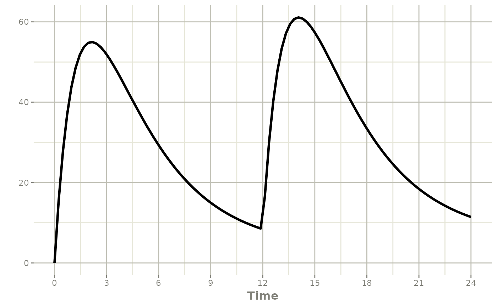
Infusion Doses
rxode2 supports several infusion types:
- Constant rate infusion (
rate) - Constant duration infusion (
dur) - Estimated (modeled) rate of infusion
- Estimated (modeled) duration of infusion
Constant infusion specified by duration or rate
Using dur
ev <- et(timeUnits="hr") |>
et(amt=10000, ii=12, until=24, dur=8) |>
et(seq(0, 24, length.out=100))
ev#> -- EventTable with 101 records --
#> 1 dosing records (see x$get.dosing(); add with add.dosing or et)
#> 100 observation times (see x$get.sampling(); add with add.sampling or et)
#> multiple doses in `addl` columns, expand with x$expand(); or etExpand(x)
#> -- First part of x: --
#> # A tibble: 101 x 6
#> time amt ii addl evid dur
#> [h] <dbl> [h] <int> <evid> [h]
#> 1 0 10000 12 2 1:Dose (Add) 8
#> 2 0 NA NA NA 0:Observation NA
#> 3 0.242 NA NA NA 0:Observation NA
#> 4 0.485 NA NA NA 0:Observation NA
#> 5 0.727 NA NA NA 0:Observation NA
#> 6 0.970 NA NA NA 0:Observation NA
#> 7 1.21 NA NA NA 0:Observation NA
#> 8 1.45 NA NA NA 0:Observation NA
#> 9 1.70 NA NA NA 0:Observation NA
#> 10 1.94 NA NA NA 0:Observation NA
#> # i 91 more rows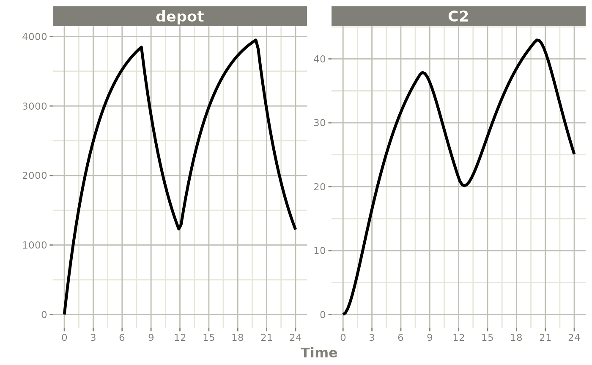
Using rate
ev <- et(timeUnits="hr") |>
et(amt=10000, ii=12, until=24, rate=10000/8) |>
et(seq(0, 24, length.out=100))
ev#> -- EventTable with 101 records --
#> 1 dosing records (see x$get.dosing(); add with add.dosing or et)
#> 100 observation times (see x$get.sampling(); add with add.sampling or et)
#> multiple doses in `addl` columns, expand with x$expand(); or etExpand(x)
#> -- First part of x: --
#> # A tibble: 101 x 6
#> time amt rate ii addl evid
#> [h] <dbl> <rate/dur> [h] <int> <evid>
#> 1 0 10000 1250 12 2 1:Dose (Add)
#> 2 0 NA NA NA NA 0:Observation
#> 3 0.242 NA NA NA NA 0:Observation
#> 4 0.485 NA NA NA NA 0:Observation
#> 5 0.727 NA NA NA NA 0:Observation
#> 6 0.970 NA NA NA NA 0:Observation
#> 7 1.21 NA NA NA NA 0:Observation
#> 8 1.45 NA NA NA NA 0:Observation
#> 9 1.70 NA NA NA NA 0:Observation
#> 10 1.94 NA NA NA NA 0:Observation
#> # i 91 more rows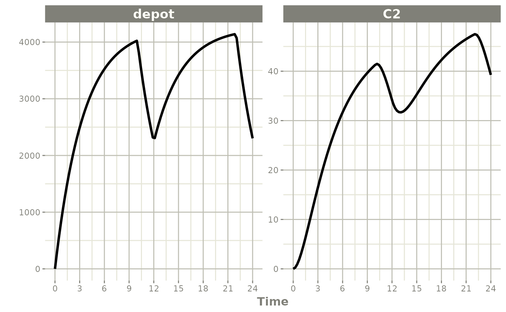
The two specifications produce the same nominal infusion. The difference appears when bioavailability changes.
When rate is fixed in the event table, a bioavailability
decrease shortens the infusion duration (as in NONMEM):
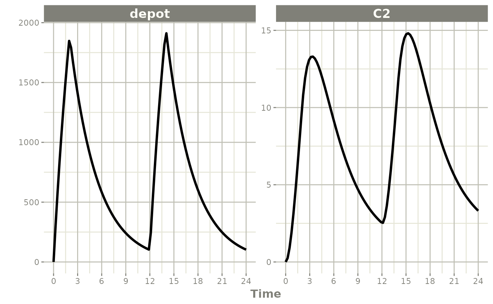

When dur is fixed instead, a bioavailability change
alters the infusion rate:
ev <- et(timeUnits="hr") |>
et(amt=10000, ii=12, until=24, dur=8) |>
et(seq(0, 24, length.out=100))
library(ggplot2)
library(patchwork)
p1 <- rxSolve(m1, ev, c(fdepot=1.25)) |> plot(depot) +
xlab("Time") + ylim(0, 5000)
p2 <- rxSolve(m1, ev, c(fdepot=0.25)) |> plot(depot) +
xlab("Time") + ylim(0, 5000)
p1 * p2Modeled rate and duration of infusion
Model the infusion duration (rate=-2, equivalent to
NONMEM RATE=-2):
ev <- et(timeUnits="hr") |>
et(amt=10000, ii=12, until=24, rate=-2) |>
et(seq(0, 24, length.out=100))
ev#> -- EventTable with 101 records --
#> 1 dosing records (see x$get.dosing(); add with add.dosing or et)
#> 100 observation times (see x$get.sampling(); add with add.sampling or et)
#> multiple doses in `addl` columns, expand with x$expand(); or etExpand(x)
#> -- First part of x: --
#> # A tibble: 101 x 6
#> time amt rate ii addl evid
#> [h] <dbl> <rate/dur> [h] <int> <evid>
#> 1 0 10000 -2:dur 12 2 1:Dose (Add)
#> 2 0 NA NA NA NA 0:Observation
#> 3 0.242 NA NA NA NA 0:Observation
#> 4 0.485 NA NA NA NA 0:Observation
#> 5 0.727 NA NA NA NA 0:Observation
#> 6 0.970 NA NA NA NA 0:Observation
#> 7 1.21 NA NA NA NA 0:Observation
#> 8 1.45 NA NA NA NA 0:Observation
#> 9 1.70 NA NA NA NA 0:Observation
#> 10 1.94 NA NA NA NA 0:Observation
#> # i 91 more rows
Model the infusion rate (rate=-1, equivalent to NONMEM
RATE=-1):
ev <- et(timeUnits="hr") |>
et(amt=10000, ii=12, until=24, rate=-1) |>
et(seq(0, 24, length.out=100))
ev#> -- EventTable with 101 records --
#> 1 dosing records (see x$get.dosing(); add with add.dosing or et)
#> 100 observation times (see x$get.sampling(); add with add.sampling or et)
#> multiple doses in `addl` columns, expand with x$expand(); or etExpand(x)
#> -- First part of x: --
#> # A tibble: 101 x 6
#> time amt rate ii addl evid
#> [h] <dbl> <rate/dur> [h] <int> <evid>
#> 1 0 10000 -1:rate 12 2 1:Dose (Add)
#> 2 0 NA NA NA NA 0:Observation
#> 3 0.242 NA NA NA NA 0:Observation
#> 4 0.485 NA NA NA NA 0:Observation
#> 5 0.727 NA NA NA NA 0:Observation
#> 6 0.970 NA NA NA NA 0:Observation
#> 7 1.21 NA NA NA NA 0:Observation
#> 8 1.45 NA NA NA NA 0:Observation
#> 9 1.70 NA NA NA NA 0:Observation
#> 10 1.94 NA NA NA NA 0:Observation
#> # i 91 more rows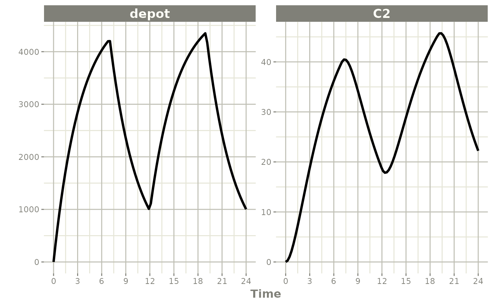
Steady State
Steady-state doses are solved until a constant inter-dose interval produces a repeating cycle.
#> -- EventTable with 101 records --
#> 1 dosing records (see x$get.dosing(); add with add.dosing or et)
#> 100 observation times (see x$get.sampling(); add with add.sampling or et)
#> -- First part of x: --
#> # A tibble: 101 x 5
#> time amt ii evid ss
#> [h] <dbl> [h] <evid> <int>
#> 1 0 10000 12 1:Dose (Add) 1
#> 2 0 NA NA 0:Observation NA
#> 3 0.242 NA NA 0:Observation NA
#> 4 0.485 NA NA 0:Observation NA
#> 5 0.727 NA NA 0:Observation NA
#> 6 0.970 NA NA 0:Observation NA
#> 7 1.21 NA NA 0:Observation NA
#> 8 1.45 NA NA 0:Observation NA
#> 9 1.70 NA NA 0:Observation NA
#> 10 1.94 NA NA 0:Observation NA
#> # i 91 more rows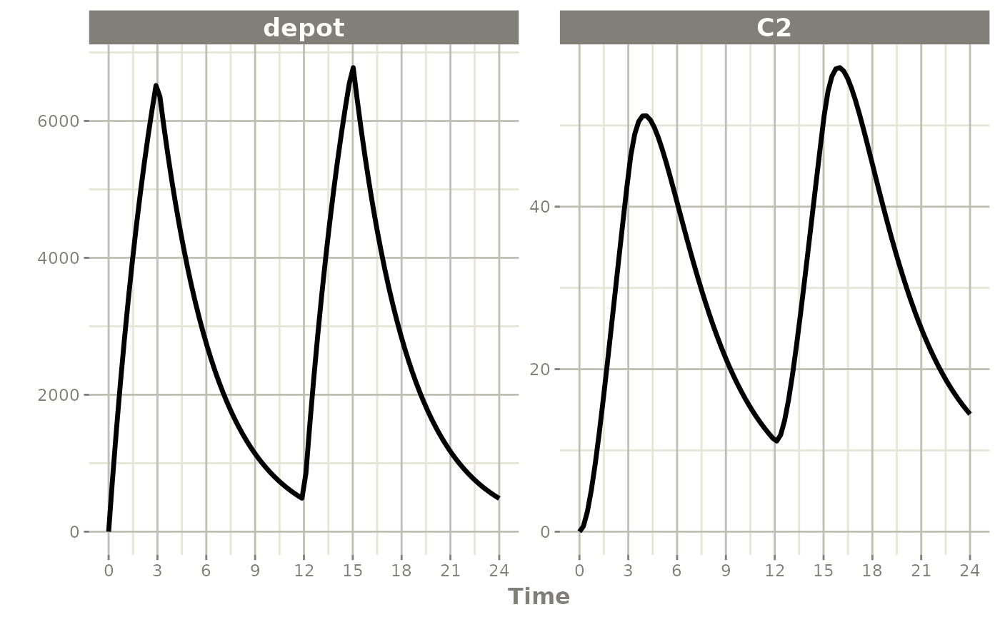
Steady state for complex dosing (ss=2)
ss=2 uses superposition to achieve steady state for
non-uniform dosing regimens (e.g. morning 100 mg vs evening 150 mg):
- All state values are saved.
- States are reset and solved to steady state.
- Saved state values are added back.
ev <- et(timeUnits="hr") |>
et(amt=10000, ii=24, ss=1) |>
et(time=12, amt=15000, ii=24, ss=2) |>
et(time=24, amt=10000, ii=24, addl=3) |>
et(time=36, amt=15000, ii=24, addl=3) |>
et(seq(0, 64, length.out=500))
library(ggplot2)
rxSolve(m1, ev, maxsteps=10000) |> plot(C2) +
annotate("rect", xmin=0, xmax=24, ymin=-Inf, ymax=Inf, alpha=0.2) +
annotate("text", x=12.5, y=7, label="Initial Steady State Period") +
annotate("text", x=44, y=7, label="Steady State AM/PM dosing")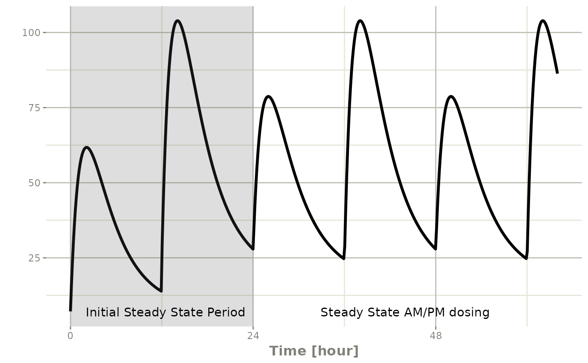
It takes a full dose cycle to reach the true complex steady-state.
Steady state for constant infusion or zero-order processes
Constant-infusion steady state (as in NONMEM):
- No inter-dose interval:
ii=0 - Steady-state flag:
ss=1 - Positive rate (
rate>0) or estimated rate (rate=-1) - Zero dose:
amt=0
The infusion is turned off once steady state is reached, just like
NONMEM. Note that rate=-2 (modeled duration) and modeled
bioavailability have no effect for this event type.
ev <- et(timeUnits="hr") |>
et(amt=0, ss=1, rate=10000/8)
p1 <- rxSolve(m1, ev) |> plot(C2, eff)
ev <- et(timeUnits="hr") |>
et(amt=200000, rate=10000/8) |>
et(0, 250, length.out=1000)
p2 <- rxSolve(m1, ev) |> plot(C2, eff)
library(patchwork)
p1 / p2
This technique can also be used for steady-state disease processes.
Reset Events
evid=3 (or evid=reset) resets all
compartments to their initial values. evid=4 resets and
then applies a dose.
ev <- et(timeUnits="hr") |>
et(amt=10000, ii=12, addl=3) |>
et(time=6, evid=reset) |>
et(seq(0, 24, length.out=100))
ev#> -- EventTable with 102 records --
#> 1 dosing records (see x$get.dosing(); add with add.dosing or et)
#> 101 observation times (see x$get.sampling(); add with add.sampling or et)
#> multiple doses in `addl` columns, expand with x$expand(); or etExpand(x)
#> -- First part of x: --
#> # A tibble: 102 x 5
#> time amt ii addl evid
#> [h] <dbl> [h] <int> <evid>
#> 1 0 10000 12 3 1:Dose (Add)
#> 2 6 NA NA NA 3:Reset
#> 3 0 NA NA NA 0:Observation
#> 4 0.242 NA NA NA 0:Observation
#> 5 0.485 NA NA NA 0:Observation
#> 6 0.727 NA NA NA 0:Observation
#> 7 0.970 NA NA NA 0:Observation
#> 8 1.21 NA NA NA 0:Observation
#> 9 1.45 NA NA NA 0:Observation
#> 10 1.70 NA NA NA 0:Observation
#> # i 92 more rows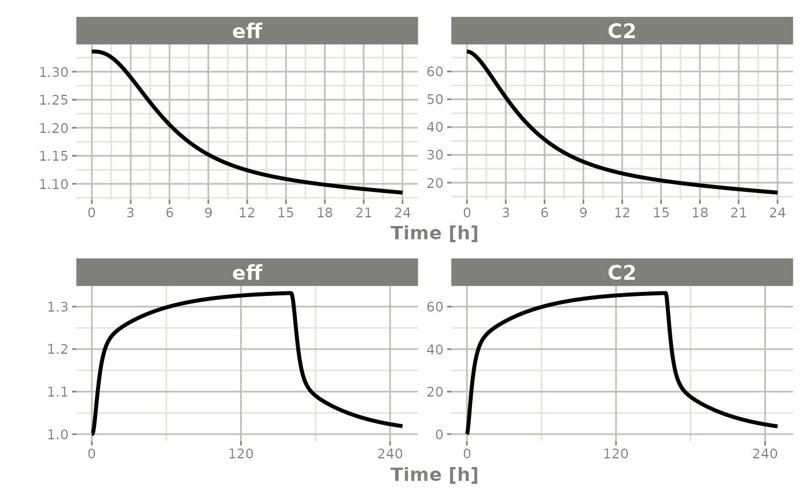
All compartments are reset to their initial values at 6 hours.
ev <- et(timeUnits="hr") |>
et(amt=10000, ii=12, addl=3) |>
et(time=6, amt=10000, evid=4) |>
et(seq(0, 24, length.out=100))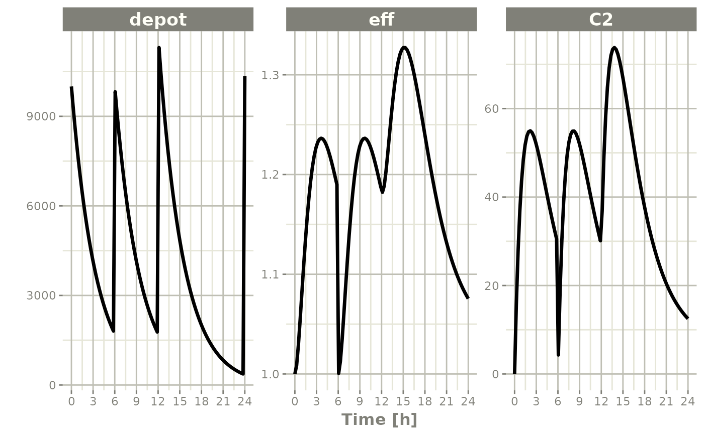
addl only resets the first evid=4
This is a common surprise, so it is worth calling out on its own:
when an evid=4 (reset+dose) record is repeated with
addl, only the first occurrence resets the
compartments. The addl-repeated doses are ordinary doses,
not further resets.
addlEv <- et(amt=10000, time=2, evid=4, ii=12, addl=2) |>
et(seq(0, 40, length.out=200))
explicitEv <- et(amt=10000, time=2, evid=4) |>
et(amt=10000, time=14, evid=4) |>
et(amt=10000, time=26, evid=4) |>
et(seq(0, 40, length.out=200))
addl <- rxSolve(m1, addlEv)
explicit <- rxSolve(m1, explicitEv)
library(patchwork)
plot(addl, C2) + ggtitle("addl=2 (resets once)") +
plot(explicit, C2) + ggtitle("three explicit evid=4 (resets every time)")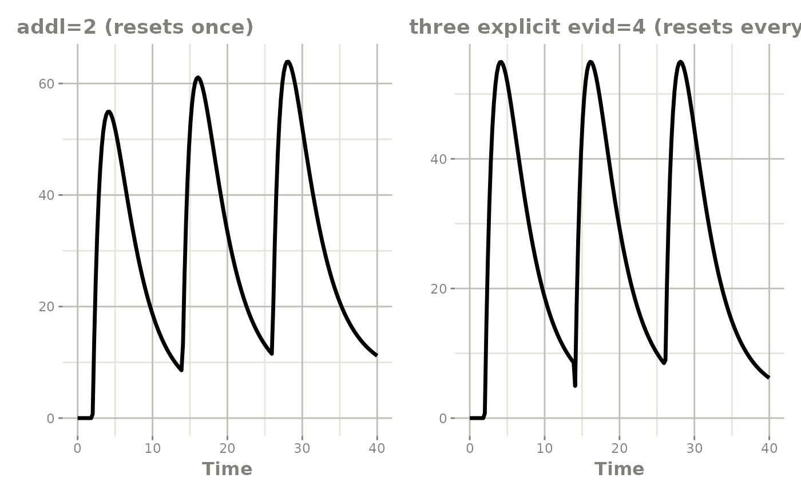
The two regimens are not the same, and this is deliberate:
it matches NONMEM, which also resets an evid=4 record’s
addl repeats as plain doses rather than repeated resets.
Write the regimen out as separate evid=4 records (as in
explicitEv above) if a reset is wanted at every
repetition.
The same asymmetry applies to ss combined with
addl: NONMEM does not carry the steady-state flag into the
addl-repeated doses either, it just keeps dosing normally
after the first, steady-state dose – see this blog
post for a worked discussion. rxode2 follows the same
convention (see the Steady State section above).
Turning off compartments
Setting cmt="-depot" with evid=2 turns off
a compartment: its value is set to the initial value, but other
compartments are unchanged. A subsequent dose to that compartment turns
it back on.
ev <- et(timeUnits="hr") |>
et(amt=10000, ii=12, addl=3) |>
et(time=6, cmt="-depot", evid=2) |>
et(seq(0, 24, length.out=100))
ev#> -- EventTable with 102 records --
#> 1 dosing records (see x$get.dosing(); add with add.dosing or et)
#> 101 observation times (see x$get.sampling(); add with add.sampling or et)
#> multiple doses in `addl` columns, expand with x$expand(); or etExpand(x)
#> -- First part of x: --
#> # A tibble: 102 x 6
#> time cmt amt ii addl evid
#> [h] <chr> <dbl> [h] <int> <evid>
#> 1 0 (default) 10000 12 3 1:Dose (Add)
#> 2 6 -depot NA NA NA 2:Other
#> 3 0 NA NA NA NA 0:Observation
#> 4 0.242 NA NA NA NA 0:Observation
#> 5 0.485 NA NA NA NA 0:Observation
#> 6 0.727 NA NA NA NA 0:Observation
#> 7 0.970 NA NA NA NA 0:Observation
#> 8 1.21 NA NA NA NA 0:Observation
#> 9 1.45 NA NA NA NA 0:Observation
#> 10 1.70 NA NA NA NA 0:Observation
#> # i 92 more rows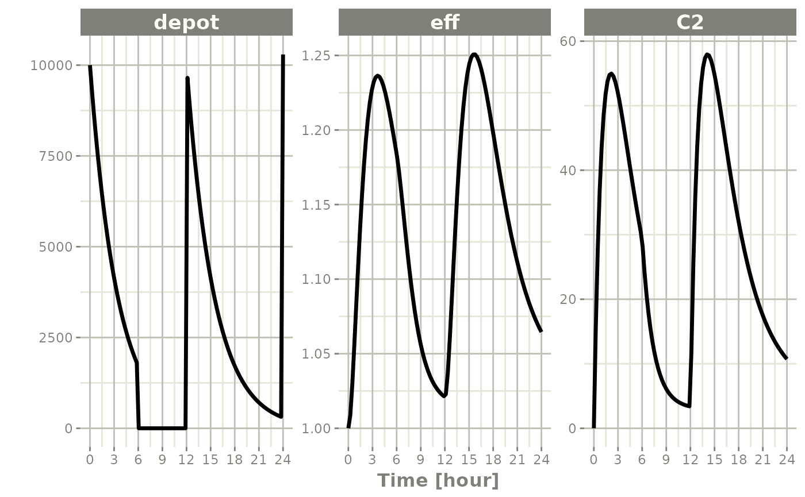
Note that a dose turns back on only the compartment that was dosed. Turning off the effect compartment keeps it off even after a new depot dose:
ev <- et(timeUnits="hr") |>
et(amt=10000, ii=12, addl=3) |>
et(time=6, cmt="-eff", evid=2) |>
et(seq(0, 24, length.out=100))
rxSolve(m1, ev) |> plot(depot, C2, eff)
To re-enable it, send a zero dose or an evid=2 event to
the compartment:
ev <- et(timeUnits="hr") |>
et(amt=10000, ii=12, addl=3) |>
et(time=6, cmt="-eff", evid=2) |>
et(time=12, cmt="eff", evid=2) |>
et(seq(0, 24, length.out=100))
rxSolve(m1, ev) |> plot(depot, C2, eff)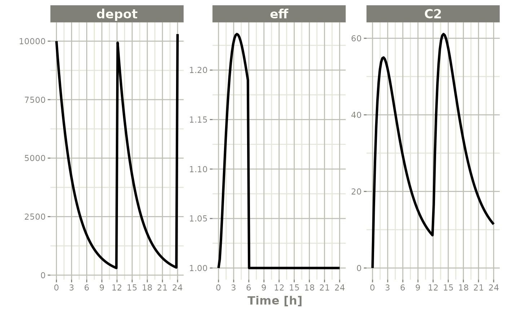